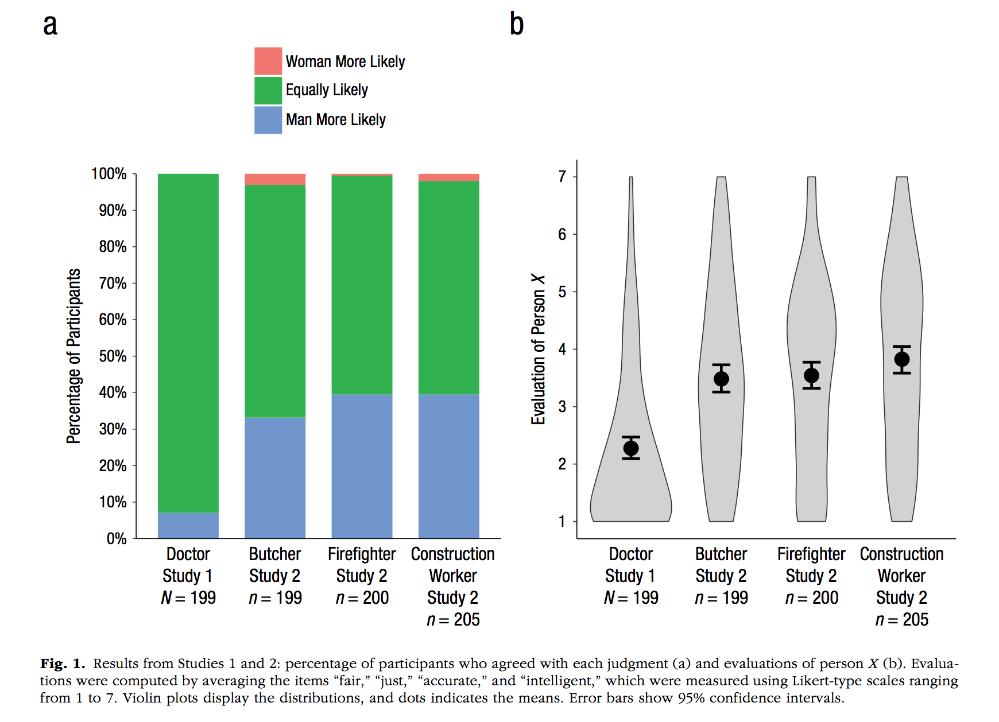
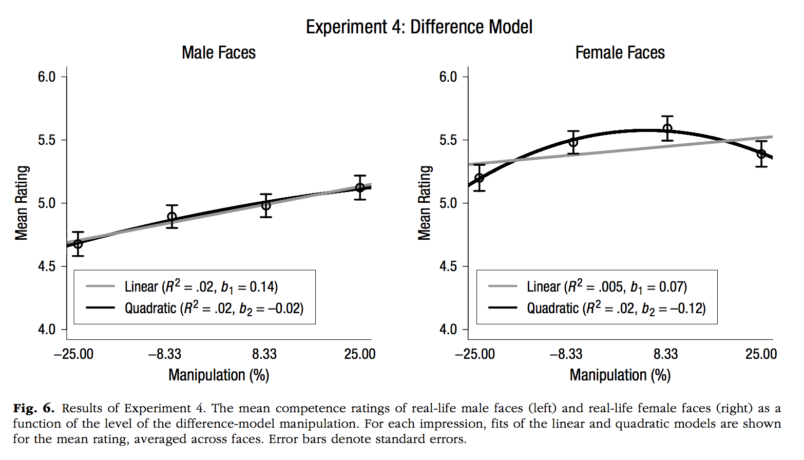
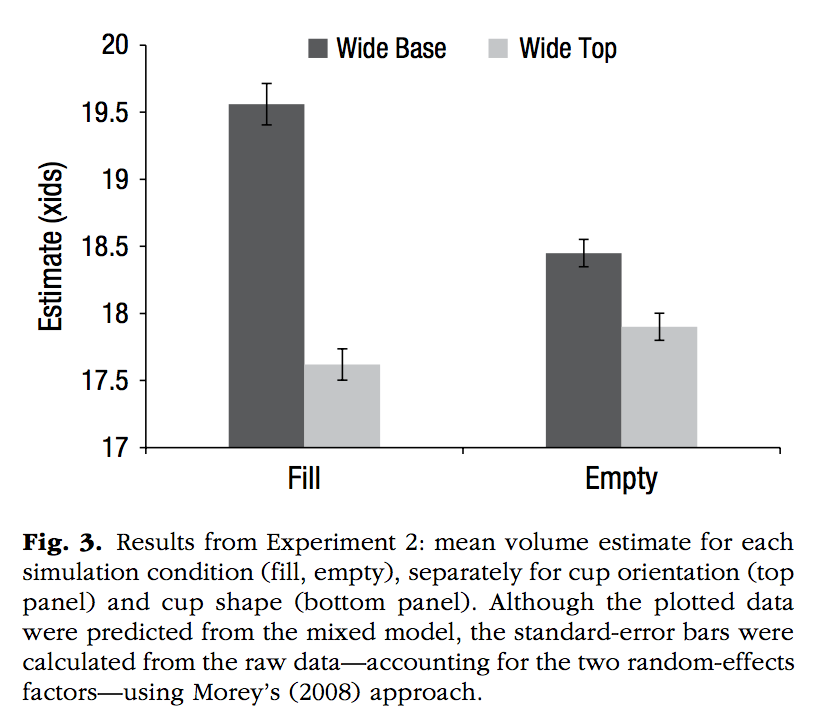
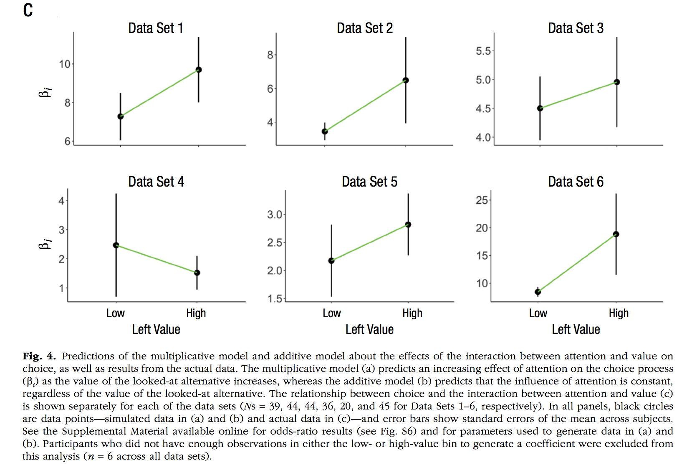

Chapter 4 Data visualization (ggplot2)
Make sure you load ggplot2 before you try to use it in your rmd file.
library(ggplot2)4.1 ggplot2 resources
4.2 Example code
4.2.1 Scatterplot
# Create dataframe
a <- c(1,2,3,2,3,4,5,4)
b <- c(4,3,4,3,2,1,2,3)
plot_df <- data.frame(a,b)
# basic scatterplot
ggplot(plot_df, aes(x=a,y=b))+
geom_point()# customize, add regression line
ggplot(plot_df, aes(x=a,y=b))+
geom_point(size=2)+
geom_smooth(method=lm)+
coord_cartesian(xlim=c(0,7),ylim=c(0,10))+
xlab("x-axis label")+
ylab("y-axis label")+
ggtitle("I made a scatterplot")+
theme_classic(base_size=12)+
theme(plot.title = element_text(hjust = 0.5))4.2.2 bar graph
1 factor
#Create a dataframe
factor_one <- as.factor(c("A","B","C"))
dv_means <- c(20,30,40)
dv_SEs <- c(4,3.4,4)
plot_df <- data.frame(factor_one,
dv_means,
dv_SEs)
# basic bar graph
ggplot(plot_df, aes(x=factor_one,y=dv_means))+
geom_bar(stat="identity")# adding error bars, customizing
ggplot(plot_df, aes(x=factor_one,y=dv_means))+
geom_bar(stat="identity")+
geom_errorbar(aes(ymin=dv_means-dv_SEs,
ymax=dv_means+dv_SEs),
width=.2)+
coord_cartesian(ylim=c(0,100))+
xlab("x-axis label")+
ylab("y-axis label")+
ggtitle("I made a bar graph")+
theme_classic(base_size=12)+
theme(plot.title = element_text(hjust = 0.5))2 factor
#Create a dataframe
factor_one <- rep(as.factor(c("A","B","C")),2)
factor_two <- rep(as.factor(c("IIA","IIB")),3)
dv_means <- c(20,30,40,20,40,40)
dv_SEs <- c(4,3.4,4,3,2,4)
plot_df <- data.frame(factor_one,
factor_two,
dv_means,
dv_SEs)
# basic bar graph
ggplot(plot_df, aes(x=factor_one,y=dv_means,
group=factor_two,
color=factor_two))+
geom_bar(stat="identity", position="dodge")
# adding error bars, customizing
ggplot(plot_df, aes(x=factor_one,y=dv_means,
group=factor_two,
color=factor_two,
fill=factor_two))+
geom_bar(stat="identity", position="dodge")+
geom_errorbar(aes(ymin=dv_means-dv_SEs,
ymax=dv_means+dv_SEs),
position=position_dodge(width=0.9),
width=.2,
color="black")+
coord_cartesian(ylim=c(0,100))+
xlab("x-axis label")+
ylab("y-axis label")+
ggtitle("Bar graph 2 factors")+
theme_classic(base_size=12)+
theme(plot.title = element_text(hjust = 0.5))3 factor
#Create a dataframe
factor_one <- rep(rep(as.factor(c("A","B","C")),2),2)
factor_two <- rep(rep(as.factor(c("IIA","IIB")),3),2)
factor_three <- rep(as.factor(c("IIIA","IIIB")),each=6)
dv_means <- c(20,30,40,20,40,40,
10,20,50,50,10,10)
dv_SEs <- c(4,3.4,4,3,2,4,
1,2,1,2,3,2)
plot_df <- data.frame(factor_one,
factor_two,
factor_three,
dv_means,
dv_SEs)
# basic bar graph
ggplot(plot_df, aes(x=factor_one,y=dv_means,
group=factor_two,
color=factor_two))+
geom_bar(stat="identity", position="dodge")+
facet_wrap(~factor_three)
4.2.3 Line Graph
1 factor
#Create a dataframe
factor_one <- as.factor(c("A","B","C"))
dv_means <- c(20,30,40)
dv_SEs <- c(4,3.4,4)
plot_df <- data.frame(factor_one,
dv_means,
dv_SEs)
# basic line graph
ggplot(plot_df, aes(x=factor_one,y=dv_means, group=1))+
geom_point()+
geom_line()# adding error bars, customizing
ggplot(plot_df, aes(x=factor_one,y=dv_means, group=1))+
geom_point()+
geom_line()+
geom_errorbar(aes(ymin=dv_means-dv_SEs,
ymax=dv_means+dv_SEs),
width=.2)+
coord_cartesian(ylim=c(0,100))+
xlab("x-axis label")+
ylab("y-axis label")+
ggtitle("I made a line graph")+
theme_classic(base_size=12)+
theme(plot.title = element_text(hjust = 0.5))2 factor
#Create a dataframe
factor_one <- rep(as.factor(c("A","B","C")),2)
factor_two <- rep(as.factor(c("IIA","IIB")),3)
dv_means <- c(20,30,40,20,40,40)
dv_SEs <- c(4,3.4,4,3,2,4)
plot_df <- data.frame(factor_one,
factor_two,
dv_means,
dv_SEs)
# basic line graph
ggplot(plot_df, aes(x=factor_one,y=dv_means,
group=factor_two,
color=factor_two,
linetype=factor_two))+
geom_point()+
geom_line()4.2.4 Histogram
base R
a<-rnorm(100,0,1)
hist(a)score <- rnorm(100,0,1)
n <- 1:100
plot_df <- data.frame(score,n)
ggplot(plot_df, aes(x=score))+
geom_histogram(bins=10,
color="white")4.3 Advanced ggplot
4.3.1 Add-on packages
- https://www.ggplot2-exts.org A repository of 50+ add on packages for ggplot2
- https://gganimate.com
- allows you to create animated .gifs of ggplots
- I made a bunch of animated gifs for a statistics textbook. They are all here along with the code https://crumplab.github.io/statistics/gifs.html
- ggrepel allows you to repel overlapping text labels away from each other.
- esquisse a GUI (graphic user interface) that allows you make ggplot graphs using drag-drop, and clickable options
- ggedit similar to above, clickable editing of ggplot graphs
- plotly a package similar to ggplot, makes a whole variety of graphs, mainly for use in websites. Allows interactive graphs.
- As an example, I used plotly on my publications website, if you hover over the dots, info pops up https://crumplab.github.io/Publications.html.
- ggpubr (install from CRAN), many useful things, including the
ggarrangefunction which allows you to knit multiple plots together - ggthemes extra themes, scales, and geoms
4.3.2 Figure Output tips
How do you control the size (width/height) of the figure, and where can you can get a file, like a .pdf or a .png of the figure?
I use knitr options to solve these problems.
4.4 knitr options
When you create a new R Markdown document you will see the following code chunk underneath the yaml, at the beginning of the document. It usually looks like this:
```{r setup, include=FALSE}
knitr::opts_chunk$set(echo = TRUE)
```This chunk is named setup, it is not printed in your output, but it controls the global setup options for the whole document. Any option you set here applies to all of the remaining code chunks you create. It’s a way of setting defaults.
Here are some helpful defaults you can add. You turn the option on with TRUE, and turn it off with FALSE.
echo=TRUEsets the default to print all remaining code blocks to the output,FALSEsets the default to not print the code blockswarning = FALSEturns off printing of warningsmessage = FALSEturns off printing of messages, these commonly occur when you load a package, where you receive a message that the package was loadedeval = FALSEsets the default to NOT evaluate the code chunk as R Code. This will not run the code block, but the code block will still print ifecho=TRUEerror=TRUEnormally the knit fails when there is an error in the code. If you seterror=TRUEthe knit will complete, and return an error message for code blocks with errors.
```{r setup, include=FALSE}
knitr::opts_chunk$set(echo = TRUE,
warning = FALSE,
message = FALSE,
eval = FALSE,
error = TRUE)
```4.4.1 knitr figure output defaults
The following setup options are useful for figure output.
fig.width = 3sets the default width in inches for all figuresfig.height = 3sets the default height in inches for all figuresfig.path = "myfigs/"defines folder where figure files will be saved. This will be relative to your current working directoydev = c("pdf", "png")tells knitr to output both .png, and .pdf versions of the figure. The .pdf contains vector graphics, meaning the figure can be resized without pixelization.
```{r setup, include=FALSE}
knitr::opts_chunk$set(echo = TRUE,
fig.width = 3,
fig.height = 3,
fig.path = "myfigs/",
dev = c("pdf", "png"))
```4.4.2 figure output per code block
You can set the options for remaining code blocks individually. These will overrule the default options that you specify in the setup chunk.
`markdown{r figurename, fig.width =5, fig.height =7}
4.5 Data-vis assignment with solutions
This assignment contains several figures that were recently published in the January 2019 issue of Psychological Science. Although, this sample of figures is somewhat arbitrary, they represent a decent range of figures that are produced in Psychological research. Notably, the look and feel of these graphs suggests that that they were all made in R using the ggplot2 package. And even if they weren’t, they can all be made in ggplot2.
Your task is to write code to reproduce each of the graphs using ggplot2. You do not have the original data for any of these graphs, and your job is to make inferences about what the data must have been. For each graph you will create a data.frame to mimic the data you see in the graph, and then use ggplot2 to make the plot.
By the end of this exercise you will become much more familiar with how ggplot2 works, and you will have created several examples of working ggplot2 scripts that you can use for making graphs in the future.
4.6 List of Figures to reproduce
Calcutt, S. E., Proctor, D., & Berman, S. M. (2019). Chimpanzees (Pan troglodytes) Are More Averse to Social Than Nonsocial Risk. Psychological Science, 30, 105–115.

library(ggplot2)
library(ggrepel)
chimps<-rep(c("Dara","Rita","Liza","Katie","Azalea","Barbi","Rowena","Fiona"), each=2)
MF <- c(59,60,51,57,48,33,3,4,23,43,1,42,3,38,0,10)
Condition <- rep(c("Social Condition","Nonsocial Condition"),8)
Aversity <- rep(c("Not Averse","Averse"),each=8)
plot_df <- data.frame(chimps,
MF,
Condition,
Aversity,
chimps2=chimps)
plot_df$chimps2[c(2,4,6,8,9,11,13,15)]<-""
plot_df$Condition <- factor(plot_df$Condition, levels = c("Social Condition","Nonsocial Condition"))
#note the commented code shows an example of using text repel to make the labels non overlapping.
ggplot(plot_df, aes(x=Condition,
y=MF,
linetype=Aversity,
group=chimps,
label=chimps2))+
geom_line()+
theme_classic(base_size=13)+
xlab("")+
ylab("Mean Frequency of Risky Choice")+
theme(legend.position="none") +
scale_y_continuous(breaks=seq(0,70,10), expand=c(0,0))+
coord_cartesian(ylim=c(0,70))+
#geom_text_repel(size=3,aes(label=chimps2))+
annotate("text", x = .8, y = 60, label = "Dara")+
annotate("text", x = .8, y = 53, label = "Rita")+
annotate("text", x = .8, y = 47, label = "Liza")+
annotate("text", x = .8, y = 3, label = "Katie")+
annotate("text", x = 2.2, y = 45, label = "Azalea")+
annotate("text", x = 2.2, y = 41, label = "Barbi")+
annotate("text", x = 2.2, y = 35, label = "Rowena")+
annotate("text", x = 2.2, y = 10, label = "Fiona")
Notes
Psychological Science has a style guide that asks authors to use the font: Helvetica Neue 57 Condensed roman font
I installed that font on machine (found a free .ttf download), then used the
showtextlibrary to use that font with ggplot2. warning: this won’t work if you don’t have the font installed, and installing the font could be idiosyncratic, it took me at least an hour
library(showtext)
font_add("HelveticaNeue",
regular = "/Users/mattcrump/Library/Fonts/Helvetica-Neue-LT-Std-57-Condensed_22529.ttf")
## Automatically use showtext to render plots
showtext_auto()
NS_risk<-c(0,1,3,4,25,45,52,59)
S_risk<-c(12,47,4,41,48,35,55,60)
plot_df<-data.frame(NS_risk,S_risk)
p<-ggplot(plot_df, aes(x=NS_risk,y=S_risk))+
geom_point(shape=18, size=1,fill="black")+
geom_smooth(method="lm",se=FALSE, color="black", size=.35)+
# theme_classic(base_size=12, base_family = "Arial Narrow")+
theme(axis.title.x=element_text(size=12,family="HelveticaNeue"),
axis.title.y=element_text(size=12,
family="HelveticaNeue"),
axis.text =element_text(size=11,
family="HelveticaNeue",
color="black"),
panel.grid.major = element_blank(),
panel.grid.minor = element_blank(),
panel.background = element_blank())+
xlab("Average Frequency of Nonsocial Risk")+
ylab("Average Frequency of Social Risk")+
coord_cartesian(xlim=c(0,70), ylim=c(0,70))+
scale_x_continuous(breaks=seq(0,70,10), expand=c(0,0))+
scale_y_continuous(breaks=seq(0,70,10), expand=c(0,0))+
theme(axis.line = element_line(size = .25))+
theme(axis.ticks = element_line(size = .25))
ggsave("datavis_figs/Calcutt2_Crump.png", p, width = 3, height = 3)
knitr::include_graphics("datavis_figs/Calcutt2_Crump.png")
Cao, J., Kleiman-Weiner, M., & Banaji, M. R. (2019). People Make the Same Bayesian Judgment They Criticize in Others. Psychological Science, 30, 20–31.

Notes 1. ggplot automatically orders factor levels alphabetically, this examples shows a method to rearrange the order of factor levels in the data.frame before plotting
studies <- rep(c("Doctor \n Study 1 \n N = 199",
"Butcher \n Study 2 \n n = 199",
"Firefighter \n Study 2 \n n = 200",
"Construction \n Worker \n Study 2 \n n = 205"), each=3)
likely <- rep(c("Women More Likely",
"Equally Likely",
"Man more Likely"),4)
pp <- c(0,90,10,
5,60,35,
2,40,58,
5,60,35)/100
plot_df <- data.frame(pp,studies,likely)
plot_df$likely <- factor(plot_df$likely,
levels = c("Women More Likely",
"Equally Likely",
"Man more Likely"))
plot_df$studies <- factor(plot_df$studies,
levels = c("Doctor \n Study 1 \n N = 199",
"Butcher \n Study 2 \n n = 199",
"Firefighter \n Study 2 \n n = 200",
"Construction \n Worker \n Study 2 \n n = 205"))
ggplot(plot_df, aes(x=studies,
y=pp,
group=likely,
fill=likely))+
geom_bar(stat="identity", width=.5)+
theme_classic(base_size=10)+
xlab("")+
ylab("Percentage of Participants")+
scale_y_continuous(breaks=seq(0,1,.1),labels = scales::percent)+
theme(legend.title = element_blank(),
axis.ticks.x.bottom = element_blank())Notes 1. An example of violin plots, which require distributions of numbers for each level 2. An example of using two data.frames in ggplot, one with all of the raw data for each level, and another with the means and confidence intervals. Confidence intervals are computed using the t.test function
A <- rexp(200)
B <- rnorm(200,3,sd=1)
C <- rnorm(200,3,sd=1)
D <- rnorm(200,3,sd=1)
DV <- c(A,B,C,D)
studies <- rep(c("Doctor \n Study 1 \n N = 199",
"Butcher \n Study 2 \n n = 199",
"Firefighter \n Study 2 \n n = 200",
"Construction \n Worker \n Study 2 \n n = 205"), each=200)
plot_df <-data.frame(DV,studies)
plot_df$studies <- factor(plot_df$studies,
levels = c("Doctor \n Study 1 \n N = 199",
"Butcher \n Study 2 \n n = 199",
"Firefighter \n Study 2 \n n = 200",
"Construction \n Worker \n Study 2 \n n = 205"))
library(dplyr)
means_df <- plot_df %>%
group_by(studies) %>%
summarise(M=mean(DV),
CI_lower = t.test(DV)$conf.int[1],
CI_upper = t.test(DV)$conf.int[2])
ggplot(means_df, aes(x=studies,y=M))+
geom_violin(data=plot_df, aes(x=studies,y=DV),fill="grey")+
theme_classic(base_size=10)+
xlab("")+
ylab("Evaluation of Person X")+
scale_y_continuous(breaks=seq(0,7,1))+
coord_cartesian(ylim=c(0,7))+
geom_point()+
geom_errorbar(aes(ymin=CI_lower,ymax=CI_upper), width=.2)

Notes: 1. An example of a histogram. Note this is incomplete because the y-axis is not showing percentages…
ps <- rnorm(100,0,1)
s<-1:100
plot_df<-data.frame(s,ps)
ggplot(plot_df, aes(x=ps))+
geom_histogram(fill="green",
color="black")+
coord_cartesian(xlim=c(-4,4))+
theme_classic(base_size=9)+
xlab("Log Likelihood Ratio")+
ylab("Participants (in Each condition)")+
ggtitle("Women Performed Surgery")+
geom_vline(xintercept=0,linetype=2)Notes: 1. customizes color schemes by hard-coding 2. use facet_wrap, and take away the borders of the facet titles
Gender <- rep(c("Men Performed Surgery \n n = 152",
"Women Performed Surgery \n n = 142"), each =3)
Parameter <- rep(c("Prior",
"Model \n Posterior",
"Reported \n Posterior"), 2)
p <- c(.7, .88, .87, .29, .72, .76)
ci <- c(.05, .05, .05, .05, .05, .05)
plot_df <- data.frame(p, ci, Gender, Parameter)
plot_df$Parameter <- factor(plot_df$Parameter,
levels = c("Prior",
"Model \n Posterior",
"Reported \n Posterior"))
ggplot(plot_df, aes(x=Parameter, y=p, fill=Parameter))+
geom_bar(stat="identity", position="dodge")+
facet_wrap(~Gender)+
theme_classic(base_size=11)+
scale_fill_manual(values=c("#F8766D", "#7CAE00", "#C77CFF"))+
ylab("P(Target = Doctor)")+
scale_y_continuous(breaks=seq(0,1,.1),labels = scales::percent)+
coord_cartesian(ylim=c(0,1))+
theme(panel.grid = element_blank(),
panel.spacing.x = unit(0,"line"),
panel.border = element_blank(),
panel.background = element_blank())+
theme(strip.background = element_rect(colour = 'white', fill = 'white', size = 0))+
theme(legend.position = "none")
Notes:
1. two linear regression lines using geom_smooth(method="lm")
2. The raw data is not plotted as points
evaluation<-c((seq(1,7,.1)+runif(61,-2,2)),
(seq(1,7,.1)+runif(61,-2,2)))
pTarget <-c((seq(.92,.85,length.out=61)+runif(61,-.1,.1)),
(seq(.8,.4,length.out=61)+runif(61,-.5,.5)))
Gender <- rep(c("Man Communicated with ATC",
"Woman Communicated with ATC"), each=61)
plot_df<-data.frame(evaluation,pTarget,Gender)
plot_df <- plot_df %>%
filter(evaluation>=1,
evaluation<=7)
ggplot(plot_df, aes(x=evaluation,y=pTarget,
group=Gender,
color=Gender))+
geom_smooth(method="lm")+
theme_classic()+
scale_y_continuous(breaks=seq(0,1,.1),labels = scales::percent)+
scale_x_continuous(breaks=seq(1,7,1))+
coord_cartesian(ylim=c(0,1))+
xlab("Evaluation of Person X")+
ylab("P(Target = Pilot)")+
theme(legend.position=c(0.45,0.2),
legend.title=element_blank(),
legend.key.size = unit(.5, "cm"))+
theme(legend.key = element_rect(colour = 'white', fill = 'white', size = 1, linetype='solid'))Jefferies, L. N., & Lollo, V. D. (2019). Sudden Events Change Old Visual Objects Into New Ones: A Possible Role for Phasic Activation of Locus Coeruleus. Psychological Science, 30, 55–64.

Notes:
1. Example of using the ggpubr package and the ggarrange function to put two separate plots side-by-side in a 2-column, 1-row, grid.
library(ggpubr)
Condition <-rep(c("No \n Transient","Transient"), each=2)
Location <-rep(c("Outside","Inside"),2)
MMRT <- c(304,300,290,280)
CI_upper <-c(315,310,304,290)
CI_lower <-c(295,290,283,270)
plot_df <-data.frame(Condition,Location,MMRT,CI_upper,CI_lower)
plot_df$Location <- factor(plot_df$Location,
levels = c("Outside","Inside"))
vis<-ggplot(plot_df, aes(x=Condition, y=MMRT, group=Location,
fill=Location))+
geom_bar(stat="identity",position="dodge",
color="black",
size=.25)+
theme_classic()+
ylab("Mean Median RT (ms)")+
coord_cartesian(ylim=c(230,340))+
scale_y_continuous(breaks=seq(230,340,10))+
scale_fill_brewer(palette="Greys", direction=-1)+
theme(legend.position=c(0.55,0.8),
legend.title=element_blank(),
legend.key.size = unit(.5, "cm"))+
ggtitle("Visual Group")
Condition <-rep(c("No \n Transient","Transient"), each=2)
Location <-rep(c("Outside","Inside"),2)
MMRT <- c(295,290,265,250)
CI_upper <-c(305,300,275,260)
CI_lower <-c(285,280,255,240)
plot_df <-data.frame(Condition,Location,MMRT,CI_upper,CI_lower)
plot_df$Location <- factor(plot_df$Location,
levels = c("Outside","Inside"))
aud<-ggplot(plot_df, aes(x=Condition, y=MMRT, group=Location,
fill=Location))+
geom_bar(stat="identity",position="dodge",
color="black",
size=.25)+
theme_classic()+
ylab("Mean Median RT (ms)")+
coord_cartesian(ylim=c(230,340))+
scale_y_continuous(breaks=seq(230,340,10))+
scale_fill_brewer(palette="Greys", direction=-1)+
theme(legend.position="none")+
ggtitle("Auditory Group")
ggarrange(vis,aud)Jouravlev, O., Schwartz, R., Ayyash, D., Mineroff, Z., Gibson, E., & Fedorenko, E. (2019). Tracking Colisteners’ Knowledge States During Language Comprehension. Psychological Science, 30, 3–19.

x <- runif(25,-2.5,3)
y <- runif(25,-10,15)
r <- round(cor(x,y), digits=2)
df <- data.frame(x,y)
a <- ggplot(df, aes(x=x, y=y))+
geom_point()+
geom_smooth(method="lm", se=FALSE)+
xlab("Social N400")+
ylab("Autism-Spectrum \n Quotient (score)")+
scale_x_continuous(breaks=seq(-2.5,2.5,2.5))+
coord_cartesian(xlim=c(-2.5,3))+
annotate("text",label=paste("r = ",r), x=2.5, y=10)
x <- runif(25,-2.5,3)
y <- runif(25,-10,15)
r <- round(cor(x,y), digits=2)
df <- data.frame(x,y)
b <- ggplot(df, aes(x=x, y=y))+
geom_point()+
geom_smooth(method="lm", se=FALSE)+
xlab("Social N400")+
ylab("\'Reading the Mind in the \n Eyes\' Test (score")+
scale_x_continuous(breaks=seq(-2.5,2.5,2.5))+
coord_cartesian(xlim=c(-2.5,3))+
annotate("text",label=paste("r = ",r), x=2.5, y=10)
x <- runif(25,-2.5,3)
y <- runif(25,-10,15)
r <- round(cor(x,y), digits=2)
df <- data.frame(x,y)
c <- ggplot(df, aes(x=x, y=y))+
geom_point()+
geom_smooth(method="lm", se=FALSE)+
xlab("Social N400")+
ylab("Empathy Quotient Test \n (score")+
scale_x_continuous(breaks=seq(-2.5,2.5,2.5))+
coord_cartesian(xlim=c(-2.5,3))+
annotate("text",label=paste("r = ",r), x=2.5, y=10)
ggarrange(a,b,c,nrow=3, ncol=1)Kim, H., Domenico, S. I. D., & Connelly, B. S. (2019). Self–Other Agreement in Personality Reports: A Meta-Analytic Comparison of Self- and Informant-Report Means. Psychological Science, 30, 129–138.

people <- rep(c("Family","Friends","Colleagues","Strangers"), each=5)
big_five <- rep(c("Emotional \n Stability","Extraversion","Openness/ \n Intellect",
"Agreeableness","Consientiousness"), 4)
mean_difference <-c(0,.3,.8,.4,.4,
c(0,.3,.8,.4,.4)-.2,
c(0,.3,.8,.4,.4)-.21,
c(0,.3,.8,.4,.4)-.25)
df <- data.frame(mean_difference,people,big_five)
df$big_five <- factor(df$big_five,
levels = c("Emotional \n Stability","Extraversion","Openness/ \n Intellect",
"Agreeableness","Consientiousness"))
df$people <- factor(df$people,
levels = c("Family","Friends","Colleagues","Strangers"))
ggplot(df, aes(x=big_five, y=mean_difference,
group=people,
shape=people,
linetype=people,
color=people))+
scale_color_brewer(palette="Greys", direction=-1)+
geom_point()+
geom_line()+
xlab("")+
ylab("Mean Difference")+
coord_cartesian(ylim=c(-.8,.8))+
scale_y_continuous(breaks=seq(-.8,.8,.2))+
theme_classic()+
geom_hline(yintercept=0)+
theme(axis.line.x.bottom = element_blank(),
axis.ticks.x.bottom = element_blank(),
legend.title = element_blank())Oh, D., Buck, E. A., & Todorov, A. (2019). Revealing Hidden Gender Biases in Competence Impressions of Faces. Psychological Science, 30, 65–79.

Perfecto, H., Donnelly, K., & Critcher, C. R. (2019). Volume Estimation Through Mental Simulation. Psychological Science, 30, 80–91.


Smith, S. M., & Krajbich, I. (2019). Gaze Amplifies Value in Decision Making. Psychological Science, 30, 116–128.

Uitvlugt, M. G., & Healey, M. K. (2019). Temporal Proximity Links Unrelated News Events in Memory. Psychological Science, 30, 92–104.